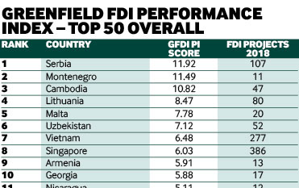

ПОЗДРАВЛЕНИЯ СЕРБИИ, ПОЗДРАВЛЕНИЯ ЧЕРНОГОРИИ
ОНИ ЗАНЯЛИ ПЕРВОЕ И ДРУГОЕМЕСТА НА ИНДЕКСЕ ЭФФЕКТИВНОСТИ ПРЯМЫХ ИНОСТРАННЫХ ИНВЕСТИЦИЙ В НОВЫЕ ПРОЕКТЫ

"Файнэншл таймс" (Financial Times) опубликовал свое исследование fDi Intelligence «Индекс эффективности прямых иностранных инвестиций (ПИИ) в новые проекты (гgreenfield) » за 2019 год. Сербия возглавила список № 1, набрав 11,92, за ней следует Черногория, набравшая 10,82 балов. В 2018 году Сербия получила 3,6 миллиарда евро прямых иностранных инвестиций.
В пресс-релизе FT говорится:
"В 2019 году, Сербия стоит на первом месте в рейтинге эффективности ПИИв новые проекты. Эта страна Юго-восточной Европы занимает первое место в ежегодном исследовании, проведенном fDi Intelligence, подразделением анализа данных Financial Times, в которое также входит журнал fDi Magazine, в котором рассматриваются инвестиции в новые проекты в 2018 году в соотношении с размером экономики каждой страны. Сербия получила 11,92 баллов в рейтинге, за ней следуют Черногория (11,49) на втором месте и Камбоджа (10,82) на третьем.
Прошлогодний победитель, Мозамбик, опустился на 12-е место после того, как в 2018 году получил меньше половины проектов ПИИ чем в 2017 году. Сербия стала лидером, поднявшись на одну позицию по сравнению с предыдущим годом.
Индекс Сербии улучшился на 1,33 баллов. Несмотря на высокие темпы роста ВВП страны в 2018 году (14,8%), в нее поступило 107 проектов ПИИ - на 26 больше, чем в 2017 году - рост почти на треть. Автомобильные компоненты, продукты питания и табачные изделия, текстиль и недвижимость являются ведущими секторами ПИИ в Сербии, и в совокупности они составили более половины (54%) от общего объема входящих проектов ПИИ в 2018 году.
Черногория, сосед Сербией на юго-западе, в 2019 года, первый раз находится на этом списке и занимает второе место. Несмотря на относительно низкий уровень, в стране осуществлено 11 проектов ПИИ в 2018 году - пиковый год с тех пор, как FDi Markets начала регистрировать данные о ПИИ в 2003 году.
Сербия, набравшая 11,92 баллов, привлекает почти в 12 раз больше новых ПИИ, чем ожидалось с учетом масштабов ее экономики."
Без сомнения, это отличная новость для дальнейшего процветания как Сербии, так и Черногории. В качестве консультанта мы оказываем помощь в привлечении инвестиций в Сербию и Черногорию в секторах реальной экономики, недвижимости и гостиничного бизнеса.
13 августа 2019 г.